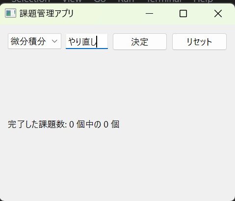
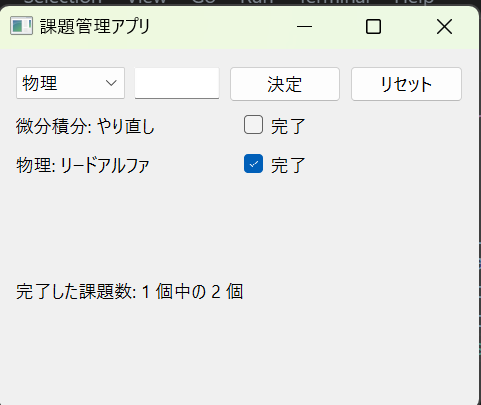
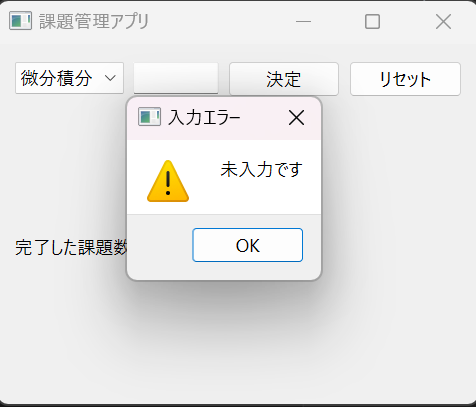
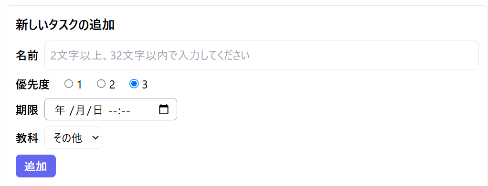
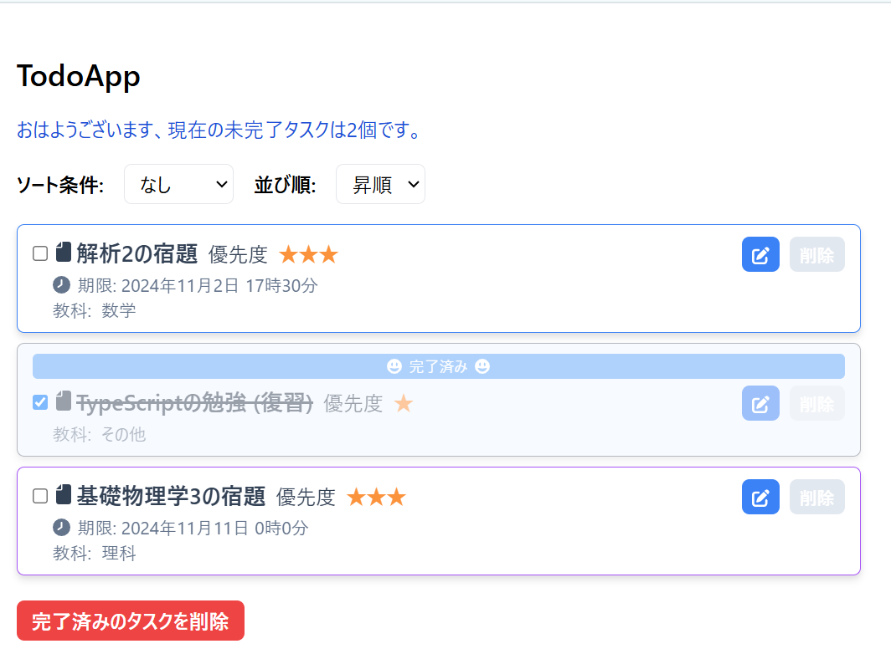
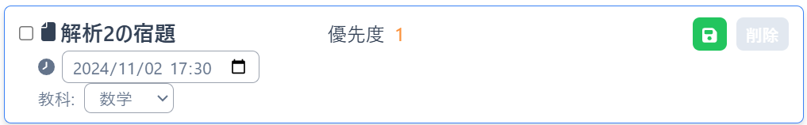
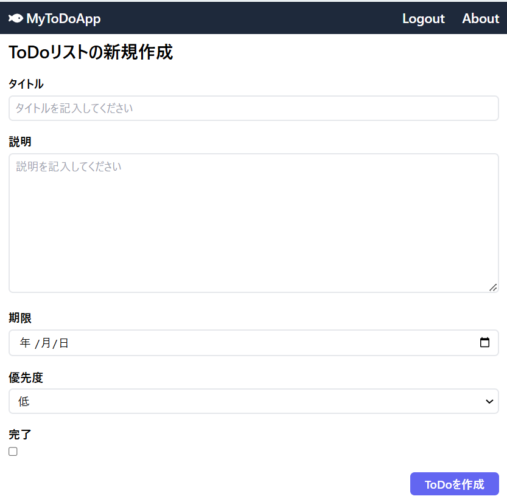
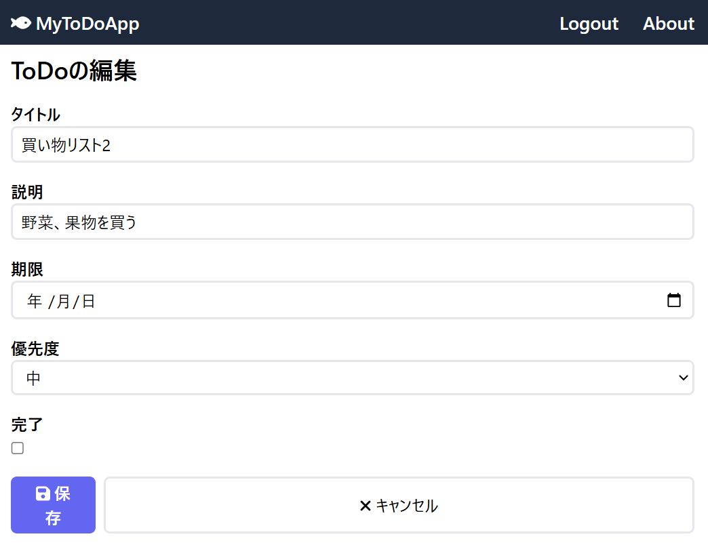
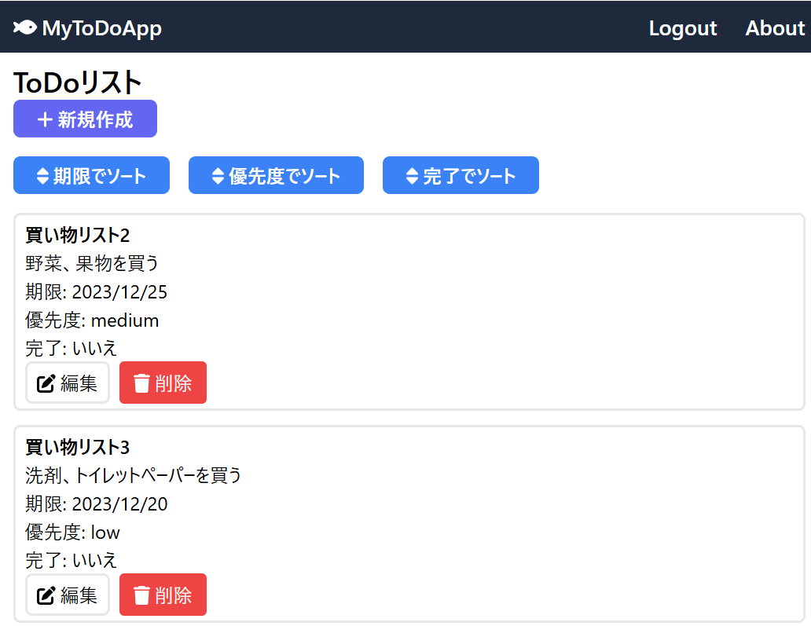

Kazushi's portfolio
Kazushi's portfolio
Profile
大阪公立大学工業専門高等学校、知能情報コース所属の高専4年生。
クラブはプログラミング研究会に所属。4年時副部長、第36回高専プロコン本選出場。
Skills
プログラム言語
- C++ ...プログラミング研究会で習い、パソコン甲子園などで使用した
- Python ...中学生の頃からプログラミング教室で習い、高専の授業でも学習した
- Arduino ...高専のマイクロコンピュータと工学基礎実習で学習した
- Scratch ...小中学生の時に自主的に学習し、高専でも少し学んだ
- C ...高専3年時の授業で学んだ
ソフトウェア
- Ambient ...Iot-DX実験で使用している
- Git/GitHub ...プログラミング1で履修し、このポートフォリオを作るのに使用した
- VSCode ...プログラミング1で履修し、pythonやjupyter環境を使用するときによく使う
- ArduinoIDE ...Arduinoを使用する際に使った
- Deeds-DCS ...論理回路1の授業で現在進行形で使っている
- MakeCode for micro:bit ...総合工学システム実習やIot-DX実験の時にmicro:bitを使うために使用した
- TinkerCad ...総合工学システム実習の時に使い、製図をした
高専祭
高専祭(2年時)
チキンレース ...2年時の高専祭で6人班で作成したゲーム
これらの車や看板、オンオフボタンなどを作成し、主にデザインを担当した。
また、タイトル画面をAIを使って作成した。


高専祭(3年時)
ゾンビFPS ...3年時の高専祭で5人班で作成したゲーム
Wiiリモコンを使用した銃の作成を行った。
作品
このゲームはデュエルマスターズというカードゲームの赤単我我我というデッキを使って一人回しで3ターン以内に決着をつけることができるかをPythonを使用して再現したものである。
自作ゲーム
このゲームは自キャラクター(通天閣)を操作して落ちてくる豚まんを食べ、とびたくんやたこ焼きから避けて
通天閣を一番上まで飛ばすとクリアというゲームとなっている。
このゲームを作った理由は冬休み前に飛んで埼玉～～琵琶湖より愛をこめてを見に行き、
関西へのいじりがとても面白くこの映画をネタにしてゲームを作りたいと思ったからだ。
製作期間:2023年12月～2024年1月
操作方法:Aキーで左に、Dキーで右に通天閣を移動させる。
ルール:551 point が0になると強制終了になる。通天閣が画面の一番上まで飛ぶと、ゲームクリアになる。
キャラクター説明
- 通天閣 ...操作するキャラクター。回転しながら移動する。
- 豚まん ...通天閣が豚まんに触れ続ける限り551 point が1.5ずつたまり続ける。
- とびたくん ...敵キャラクター。とびたくんに触れ続ける限りと551 point が1ずつ減り続ける。
- たこ焼き ...敵キャラクター。一回でも触れると551 point が0になり、ゲームオーバーになる。
- 551の蓬莱 ...落下し終わるまでに一回でも触れたら551 pointが55.1追加される。
- 火 ...通天閣が飛ぶときの演出要員。
- 土 ...背景の地面を作る要員。

ゲーム画面はこのようになっている

frame meter が1500を超えると通天閣が飛び始める

551 point が100を切り出すとこの文字が赤くなる
自作アプリ
製作期間:2024年2月
製作時間:約6時間
このアプリはPySide を使って制作した課題管理アプリである。まず、コンボボックスにある教科を選択し、空欄に文字を入力し、決定ボタンを押すと

「微分積分：やり直し」のように教科名とやるべき内容を表示する。そして、課題が終わると横にあるチェックボックスに
チェックを入れると課題が終了した判定になる。また、何個も入力すると「完了した課題数: a個中のb個」と表示され、
自分が今どのくらい終わらしているのかが分かるようになっている。

また、何も入力しないまま決定ボタンを押すと「未入力です」と表示される。

製作期間:2024年10月~11月
製作時間:約20時間
アプリへのURL
このアプリはNode.js と TypeScriptを使って制作したTodoアプリである。まず、タスクに「名前」、「優先度」、「期限」、「教科」を設定可能である。

アプリで課題を追加すると下のような状態になる。優先度によって星の数が変わり、教科によってタスクの縁の色が変化する。
また、このアプリにはソート機能があり、「優先度」、「期限」、「教科」でソートされ、昇順か降順か選べる。

そして、右の青いマークを押すとタスクの内容を編集できる。

ToDoアプリ
- 概要: ToDoアプリは、日々のタスクを管理するためのシンプルで使いやすいウェブアプリケーションです。ユーザーはタスクの作成、編集、削除、完了状態の管理を行うことができます。主に個人のタスク管理を目的としています。
- 開発の背景・経緯: 効率的なタスク管理を行うためのツールが必要だと感じ、Next.js と Prisma を学ぶためにこのアプリを構築しました。技術的な知識を深めるとともに、実際に使えるプロダクトを作成することを目指しました。
- 公開URL: ToDoアプリ
特徴と機能の説明
- タスク追加: タスクの作成が簡単に行えます。タスクの内容はタイトル、説明、期限、優先度、完了です。

- タスク編集: タスクの編集が簡単に行えます。編集内容はタスク追加と同じです。

- タスク一覧: 追加したタスク一覧が見れます。ここでタスクを期限、優先度、完了でソートできます。また、作成したタスクを削除できます。

使用技術 (技術スタック)
- 言語とフレームワーク:
- TypeScript
- Next.js
- Prisma
- 開発ツールとサービス:
開発期間・体制
- 開発体制: 個人開発
- 開発期間: 2024.12 ~ 2025.2 (約25時間)
工夫した点・苦労した点
- 技術的な挑戦: Next.js と Prisma を組み合わせて、効率的なデータベース操作とページ生成を実現しました。
- 苦労した点: 認証機能の実装において、セキュリティを確保しつつユーザーエクスペリエンスを向上させるために、多くの時間を費やしました。
既知の課題と今後の展望
- 既知の課題:
- タスクの検索機能が未実装
- モバイルデバイスでの表示最適化が不十分
- ToDoリストにコンテンツを付けれなかった
- 今後の展望:
- タスクの検索機能を追加
- モバイルデバイスでの表示最適化
- コメント機能の追加
- コンテンツの追加とコンテンツでのソート
自作サイト
製作期間:2024年7月
製作時間:約10時間
GitHub へのURL
これはhtml とcss Javascript を使って制作したサイトである。ここではJavaScriptの基本的な技術の解説を実際のコードを使用して解説している。
また、そのコードをコピーできるボタンを作成した。
高専プロコン
学食管理アプリ
-
概要:
学食管理アプリは、学校の食堂における食事の注文、管理、及び在庫を一元管理するウェブアプリケーションです。ユーザーは食事メニューの閲覧、カート機能による注文、PayPay等の複数の決済方法による支払い、注文状況のリアルタイム追跡が可能です。店舗管理者は商品管理、注文履歴の確認、ユーザー管理を行うことができます。
-
開発の背景・経緯:
学校の食堂運営を効率化し、ユーザーエクスペリエンスを向上させるために本アプリを開発しました。Next.js
と TypeScript
を用いた実践的なプロジェクトを通じて、認証機能、決済API統合、リアルタイムデータ同期等の高度な機能実装を学びました。
-
公開URL:
学食管理アプリ（デプロイ予定）
特徴と機能の説明
-
メニュー閲覧・検索:
ユーザーは学食の商品メニューを一覧表示で閲覧でき、複数の店舗から商品を選択できます。各商品の詳細情報（価格、説明、画像）が表示されます。
-
ショッピングカート機能:
選択した商品をカートに追加し、注文前に数量や商品の確認が可能です。カート内の商品は増減及び削除ができます。
-
複数決済方法の対応:
PayPayを含む複数の決済方法に対応しており、ユーザーは希望の支払い方法を選択できます。現金払いにも対応しています。
-
注文履歴・トラッキング:
ユーザーは自身の注文履歴を確認でき、現在の注文状況（準備中、完成等）をリアルタイムで追跡できます。
-
ユーザー管理:
ユーザーは個人アカウントを管理でき、プロファイル更新、パスワード変更、購入履歴の確認が可能です。
-
管理画面:
店舗管理者専用の管理画面で、商品の追加・編集・削除、注文管理、ユーザー管理、お知らせの配信ができます。
-
ポイント機能:
ユーザーの購入に応じてポイントが付与され、ポイント管理画面でポイント残高を確認できます。
-
お知らせ機能:
管理者はお知らせを配信でき、ユーザーは最新情報をアプリ内で確認できます。
使用技術 (技術スタック)
-
言語とフレームワーク:
- TypeScript
- Next.js
- React
- Tailwind CSS
- Prisma ORM
-
バックエンド・データベース:
- Next.js API Routes
- Supabase (PostgreSQL)
-
外部API・サービス:
- PayPay決済API
- メール送信機能（注文確認）
-
開発ツール:
- VSCode
- Git / GitHub
- Vercel（デプロイ予定）
開発期間・体制
- 開発体制: 個人開発
- 開発期間: 2024年12月 ~ 2025年2月（開発中）
工夫した点・苦労した点
-
複数決済方法への対応:
PayPayなどの外部決済APIを統合し、複数の支払い方法をサポートするアーキテクチャを設計しました。これにより、ユーザーの利便性を大幅に向上させました。
-
認証・セキュリティ:
Supabaseを使用したセキュアな認証機能を実装し、ユーザーデータの保護とアクセス制御を確保しました。
-
リアルタイムデータ同期:
注文状況の更新をリアルタイムで反映させるため、Supabaseのリアルタイム機能を活用しました。
-
メール送信機能:
注文確認メールの自動送信機能を実装し、ユーザーへの自動連絡体制を構築しました。
-
管理画面の設計:
複雑な管理機能を使いやすいUIで提供するため、Tailwind
CSSを活用した効率的なUIデザインに注力しました。
-
データベース設計の工夫:
Prismaを用いて、正規化されたデータベーススキーマを設計し、データの一貫性と効率性を確保しました。
既知の課題と今後の展望
-
既知の課題:
- モバイルデバイスでの表示最適化が進行中
- 在庫管理機能がまだ未実装
- 分析ダッシュボード機能が未実装
-
今後の展望:
- 在庫管理機能の実装（商品の在庫数管理と自動更新）
- 販売分析ダッシュボード（売上グラフ、人気商品ランキング等）
- プッシュ通知機能（注文準備完了時のアラート）
- モバイルアプリ化（React Native等での実装）
- マップ機能の拡張（複数店舗の位置情報表示）
- ユーザーレビュー・レーティング機能
- 定期購入機能の実装